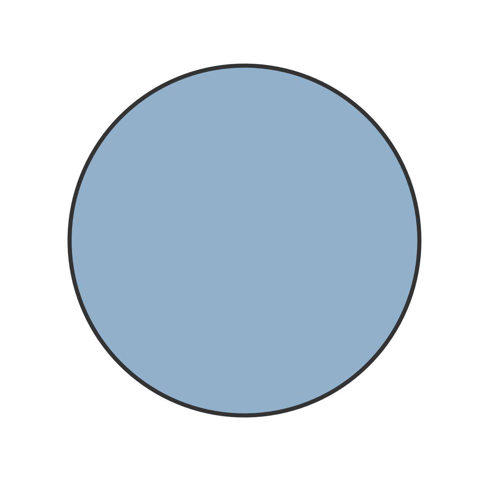
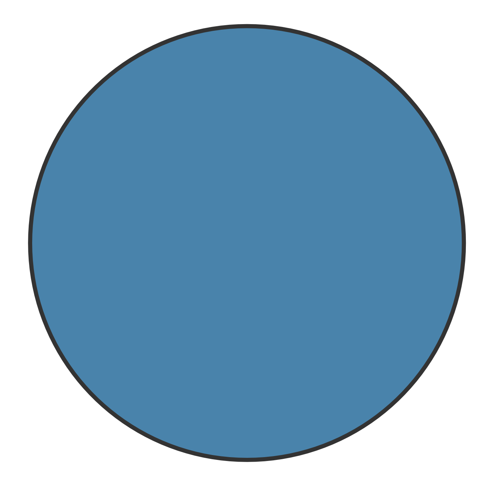

Chapter 9 Model Comparison
9.1 Formalize Models
We consider Zero Inflated Negative Binomial Mixed-Effects models with only the role of gender as a fixed effect and children’s classroom ID as a random effect for \(p\). Whereas, considering \(\mu\), we define the same models as in the analysis of externalizing problems. Using R formula syntax, we have
# formula for p (same for all models)
p ~ gender + (1|ID_class)
# formula for mu
# fit_int_zero
mu ~ gender + (1|ID_class)
# fit_int_mother
mu ~ gender + mother + (1|ID_class)
# fit_int_additive
mu ~ gender + mother + father + (1|ID_class)
# fit_int_inter
mu ~ gender + mother * father + (1|ID_class)9.2 AIC and BIC Results
AIC and BIC values together with their relative weights are computed are reported in Table~9.1.
| Model | Df | AIC | AIC\(_{weights}\) | BIC | BIC\(_{weights}\) | ||
|---|---|---|---|---|---|---|---|
| fit_int_zero | 6 | 3671.4 | 0.00 | 3704.6 | 0.52 |  | |
| fit_int_mother | 9 | 3657.4 | 0.83 |  | 3704.8 | 0.48 | |
| fit_int_additive | 12 | 3660.6 | 0.16 | 3722.2 | 0.00 | ||
| fit_int_inter | 21 | 3669.0 | 0.00 | 3773.3 | 0.00 |
According to AIC, the most likely model is fit_int_mother (83%) and the second most likely model is fit_int_additive (16%) given the data and the set of models considered. According to BIC, instead, fit_int_zero and fit_int_mother models have almost the same probability, 52% and 48% respectively.
We can say that there is evidence in favour of the role of mother attachment but probably this effect is small.
9.3 Selected Model
Results of analysis of deviance for model fit_int_mother are reported below.
car::Anova(fit_int_mother)
## Analysis of Deviance Table (Type II Wald chisquare tests)
##
## Response: internalizing_sum
## Chisq Df Pr(>Chisq)
## gender 0.754 1 0.3852261
## mother 19.894 3 0.0001786 ***
## ---
## Signif. codes: 0 '***' 0.001 '**' 0.01 '*' 0.05 '.' 0.1 ' ' 1Results confirm a statistically significant effect of mother attachment. The model summary is reported below.
summary(fit_int_mother)
## Family: nbinom2 ( log )
## Formula: internalizing_sum ~ gender + mother + (1 | ID_class)
## Zero inflation: ~gender + (1 | ID_class)
## Data: data_cluster
##
## AIC BIC logLik deviance df.resid
## 3657.4 3704.8 -1818.7 3637.4 837
##
## Random effects:
##
## Conditional model:
## Groups Name Variance Std.Dev.
## ID_class (Intercept) 0.1423 0.3772
## Number of obs: 847, groups: ID_class, 50
##
## Zero-inflation model:
## Groups Name Variance Std.Dev.
## ID_class (Intercept) 2.966 1.722
## Number of obs: 847, groups: ID_class, 50
##
## Dispersion parameter for nbinom2 family (): 2.56
##
## Conditional model:
## Estimate Std. Error z value Pr(>|z|)
## (Intercept) 0.91263 0.10407 8.770 < 2e-16 ***
## genderM 0.06096 0.07021 0.868 0.38523
## motherAnxious 0.28519 0.08921 3.197 0.00139 **
## motherAvoidant 0.11979 0.09462 1.266 0.20550
## motherFearful 0.46860 0.11682 4.011 6.04e-05 ***
## ---
## Signif. codes: 0 '***' 0.001 '**' 0.01 '*' 0.05 '.' 0.1 ' ' 1
##
## Zero-inflation model:
## Estimate Std. Error z value Pr(>|z|)
## (Intercept) -2.5021 0.5425 -4.612 3.99e-06 ***
## genderM -0.2774 0.3493 -0.794 0.427
## ---
## Signif. codes: 0 '***' 0.001 '**' 0.01 '*' 0.05 '.' 0.1 ' ' 1Figure 9.1: Marginal predicted values according to gender and mother attachment (\(n_{subj} = 847\)).
Post-hoc tests are run, considering pairwise comparisons and adjusting p-values according to multivariate t-distribution. Results are reported below,
emmeans::contrast(emmeans::emmeans(fit_int_mother, specs = ~ mother ),
"pairwise", adjust = "mvt")
## contrast estimate SE df t.ratio p.value
## Secure - Anxious -0.285 0.0892 837 -3.197 0.0077
## Secure - Avoidant -0.120 0.0946 837 -1.266 0.5809
## Secure - Fearful -0.469 0.1168 837 -4.011 0.0004
## Anxious - Avoidant 0.165 0.0869 837 1.903 0.2243
## Anxious - Fearful -0.183 0.1096 837 -1.673 0.3346
## Avoidant - Fearful -0.349 0.1167 837 -2.989 0.0149
##
## Results are averaged over the levels of: gender
## Results are given on the log (not the response) scale.
## P value adjustment: mvt method for 6 testsResults indicate that Fearful and Anxious children have more problems than Secure children. Moreover, also the difference between Avoidant and Fearful children is significant.
To evaluate the fit of the model to the data, we computed the Marginal \(R^2\) and the Conditional \(R^2\).
performance::r2(fit_int_mother)
## Warning: mu of 3.2 is too close to zero, estimate of random effect variances may be unreliable.
## # R2 for Mixed Models
##
## Conditional R2: 0.209
## Marginal R2: 0.031We can see that the actual variance explained by fixed effects is 3%, not that much.
Conclusions
Considering attachment theoretical perspectives, results indicate only the role of mother attachment so we can support the Monotropy Theory. Note, however, that the compared models contain no information regarding the expected direction of the effects but we only include/exclude predictors.